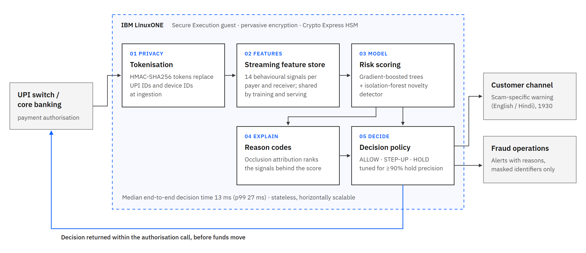
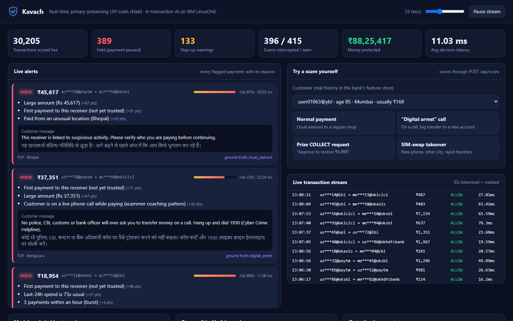

| Scam type | How it works | Signal available during the payment |
|---|---|---|
| Digital arrest | Impersonators posing as police, CBI or customs keep the victim on a call and direct transfers to a "verification" account. | Payer on an active call; first payment to the receiver; amount far above the payer's norm. |
| Collect-request fraud | The victim is told to approve a request to "receive" a prize or refund. Approving a COLLECT request debits the account. | COLLECT from an unknown receiver; recently opened receiving account. |
| Account takeover | After a SIM swap or remote-access install, the attacker drains the account from a new device. | Unrecognised device and location; burst of payments to new receivers. |
| Money mules | Purchased or rented accounts collect from many victims and forward funds within minutes. | Many distinct payers to one receiver within a day; rapid onward transfers. |
UPI processes more than 10 billion payments a month. Once a payment settles, recovery depends on slow freeze-and-refund processes. Prevention has to happen inside the authorisation window.
The score must return inside the authorisation call, in milliseconds, for every payment. Batch or post-settlement review cannot stop a transfer that has already settled.
A customer who is warned needs a reason specific to their situation. An analyst who releases a held payment needs the evidence. A regulator needs an audit trail.
Behavioural profiling must not create a new store of identifiable payment data. Identifiers are tokenised before any processing, and demographics are excluded from the model.
| Decision | Action | Share of genuine payments |
|---|---|---|
| ALLOW | Payment proceeds with no change to the customer experience. | 99.66% |
| STEP-UP | Scam-specific warning and explicit re-confirmation. Also triggered by behaviour never seen in genuine traffic. | 0.28% |
| HOLD | Payment paused and customer informed. Released after verification by the customer or bank. | 0.06% |
Example reasons attached to alerts: first payment to this receiver; customer on a live call while paying; receiver paid by 7 different people today; device not previously seen on this account.
The message is selected from the signals that drove the decision and shown in English and Hindi.

14 signals: amount relative to the payer's norm, first-time receiver, device and location, live-call flag, COLLECT type, payment bursts, 24-hour spend, receiver fan-in and account age. A receiver, device or city becomes trusted only after 24 hours.
Gradient-boosted trees learn known fraud patterns. An isolation forest trained only on genuine traffic flags unfamiliar behaviour for step-up, giving coverage beyond the patterns in the training labels.
Occlusion attribution: each signal is reset to a typical genuine value and the drop in risk is measured. This runs in one batched model call, and the top signals become reason codes.
Time-based split: train on days 1–17, set thresholds on days 18–22, report on days 23–30. The same feature code is used in training replay and live serving, so there is no train/serve skew.
Data. 139,755 simulated UPI payments over 30 days (4,000 customers, 600 merchants, 80 mule accounts). It includes four fraud patterns from public advisories and deliberately includes hard cases: large payments to new legitimate receivers, genuine payments made during calls, new merchants, travel, device changes, and long-established accounts used as mules. Real UPI data is not publicly available.
| Operating metric | Value |
|---|---|
| Genuine payments with any friction | 0.34% |
| Genuine payments held | 0.06% |
| PR-AUC | 0.972 |
| ROC-AUC | 0.999 |
| Control | Implementation |
|---|---|
| Identity protection | UPI and device IDs are replaced by keyed HMAC-SHA256 tokens at ingestion. Analysts see masked IDs only. |
| No protected attributes | Age and other demographics are not model inputs. Age is used only for the outcome audit. |
| Explainability | Every STEP-UP and HOLD carries ranked reason codes. |
| Human oversight | HOLD pauses a payment and does not reverse it. Release follows verification. |
| Age group | Genuine payments flagged | Frauds detected |
|---|---|---|
| 18–35 | 0.28% | 92.7% |
| 36–55 | 0.38% | 96.7% |
| 56 and over | 0.34% | 95.7% |
Older customers, who are disproportionately targeted by digital-arrest fraud, receive the same level of protection without a higher false-alarm rate.

| Requirement | IBM Z capability | Kavach today → production path |
|---|---|---|
| In-transaction inference at scale | Telum on-chip AI accelerator; IBM Snap ML and Z Deep Learning Compiler; Machine Learning for z/OS for CICS/IMS scoring | Runs natively on LinuxONE (s390x) with a single-row scoring path → tree model served on the on-chip accelerator |
| Key protection | Crypto Express HSM (CCA / EP11); pervasive encryption | HMAC tokenisation key from configuration → key held and used inside the HSM |
| Confidential processing | IBM Secure Execution for Linux; Hyper Protect Virtual Servers | Stateless container → deployed as a Secure Execution guest |
| Long-term cryptographic safety | Quantum-safe algorithms (ML-KEM, ML-DSA) on IBM Z | Standard TLS → quantum-safe TLS and key wrapping, no model change |
| Availability | IBM Z reliability and vertical scale | Stateless scoring replicated across cores and LPARs |